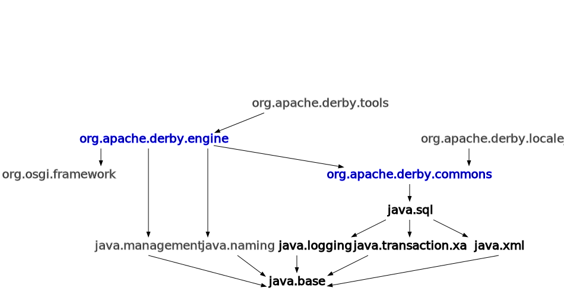

Module org.apache.derby.engine
The smallest footprint, core Derby configuration consists of the embedded engine. In this configuration, Derby is a complete, secure, transactional, recoverable data manager which runs in the same JVM as the user's application. This configuration includes an embedded JDBC driver, accessed via java.sql.DriverManager.getConnection(). More functionality can be enabled by adding other, optional modules to this configuration:
- org.apache.derby.tools - This module lets the application access Derby via javax.sql.DataSources.
- org.apache.derby.locale_* - These modules let Derby translate diagnostic messages into languages other than English.
- org.osgi.framework - This module lets Derby load as an OSGI component. The user must supply an OSGI implementation in a module named org.osgi.framework.
- java.management - This module lets JMX MBeans introspect the Derby engine.
- java.naming - This module supports JNDI lookup of DataSources and LDAP authenticators.
Module Diagram:

-
-
Packages
All Packages Exports Opens Package Exported To Modules Opened To Modules Description org.apache.derby.agg All Modules None org.apache.derby.authentication All Modules None org.apache.derby.catalog All Modules None org.apache.derby.mbeans None All Modules JMX MBeans.org.apache.derby.vti All Modules None Support for Table Functions.
-